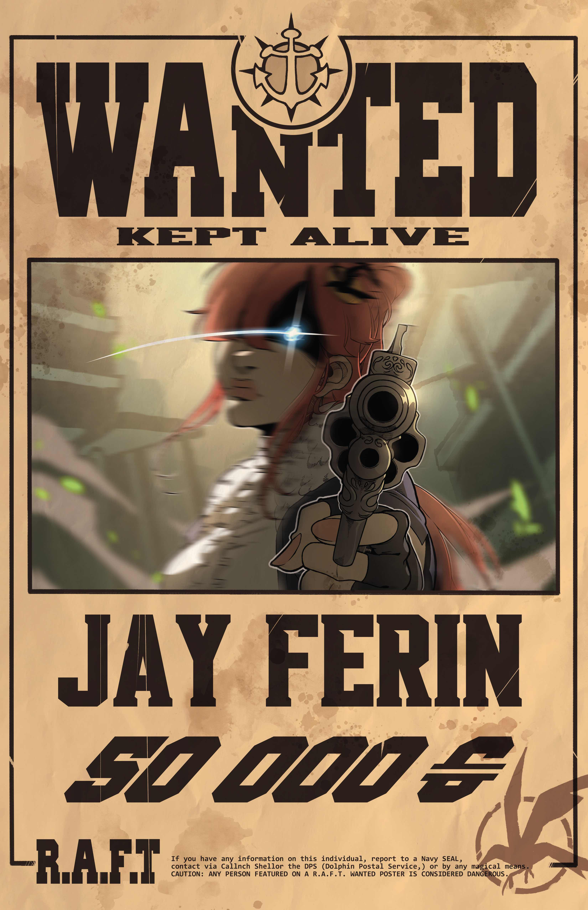

Jay Ferin

| Strength |
Intelligence |
Dexterity |
Wisdom |
Constitution |
Charisma |
Health Points |
Armor Class |
| 8 |
18 |
17 |
13 |
16 |
14 |
109 |
16 |
- Despite being associated with birds, Jay's favorite animal is a raccoon
- Before joining Chip's crew, Jay was a bartender in her mom's tavern
- Jay's family has a tendency to keep a long "A" theme with their names; Her mom's name is Mae, her father's Jayson, her sister was Ava, and her uncle is Drei
- Jay likes to tinker and has even created a couple weapons for herself and a few crewmates